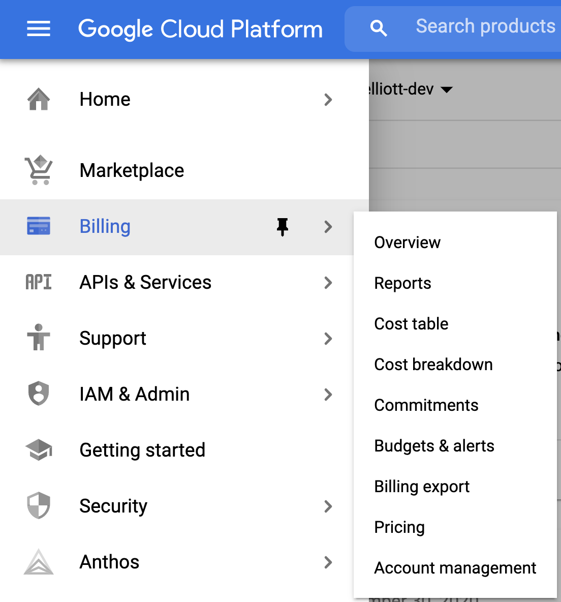
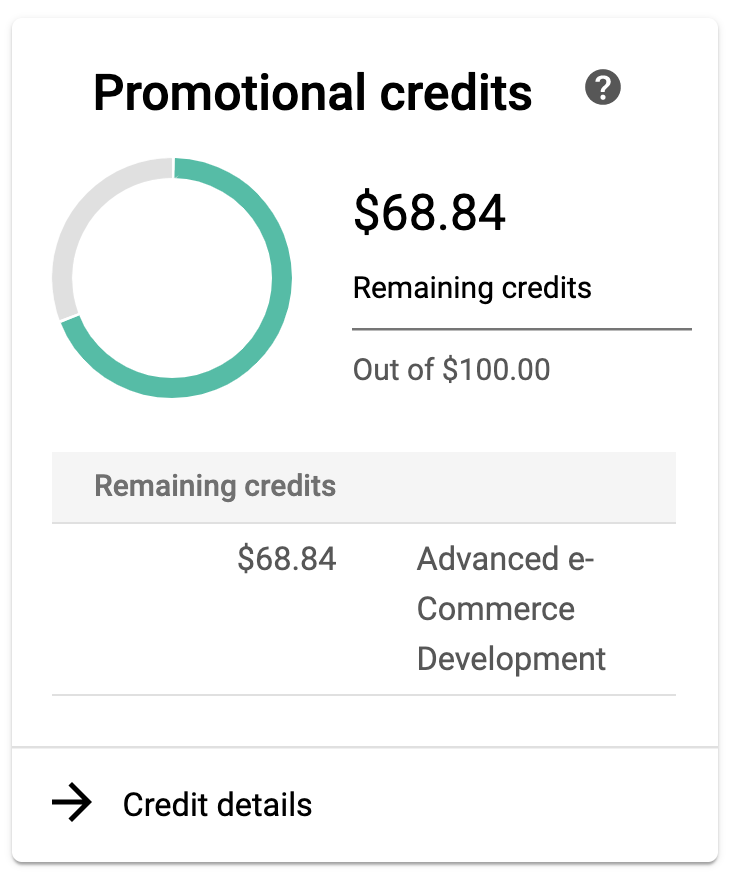
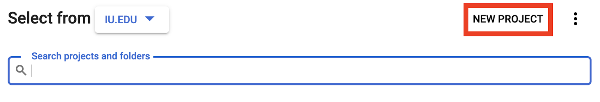
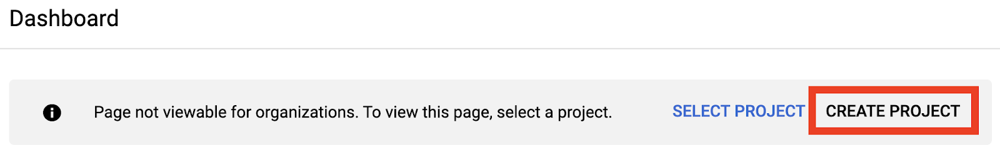
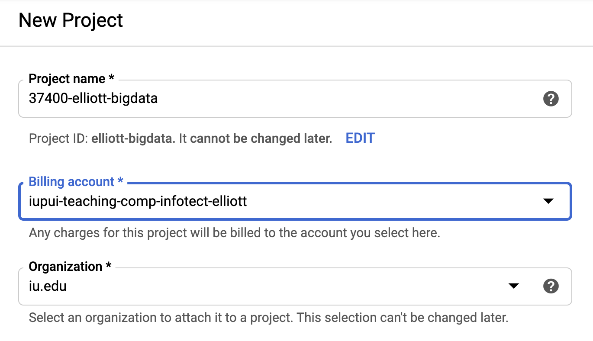

This tutorial will guide you through the process of creating a new project in the Google Cloud Platform. Before you begin you should ensure that you have an active billing account. Instructions for verifying your billing account are included in this tutorial. |
|

In the Google Cloud Platform (GCP), individual applications are often divided into projects. A project can incorporate any number of individual cloud services (Storage, Compute Engine, etc.)
A project is associated with one billing account. All of the costs for all of the cloud services within this project will be charged to the billing account.
A billing account can support up to ten individual GCP projects.
If you are using the Google Cloud Platform in a course, you will likely have a single billing account that provides credit for all of the projects in that course. Your instructor will inform you when you need to create a new, separate project.
Before you create a project in the Google Cloud Platform (GCP), you must ensure that you have an active billing account with a specific payment source (either educational credits or an associated credit card.)
To verify your billing account is active, do the following:
- Visit the Google Cloud Console and ensure you are logged in with the email address you used when creating the billing account (this is most likely your university email address.)
- Once you have loaded the Console, choose Billing from the primary navigation located in the dropdown at the top left.
- If you are in an active GCP project, you will be directed to choose the current billing account. To see all of your accounts choose Manage billing accounts.

- By default, the Billing page will only show active accounts. You should have at least one active account listed.
- To see all of your billing accounts, select "Show all accounts" from the dropdown at the top of the list.
- Selecting one of the billing account names will take you to the overview page for that billing account.
- Billing accounts with educational credits should show the remaining credit balance on the account Overview page.

Once you have confirmed that you have an active billing account that has credits remaining, you can continue.
Believe it or not, it can be tricky to find the New Project Page. You can get to it from multiple screens within the Google Cloud Console.
From the Project List
If you see a project name in the title bar of the Console, select the current project name.
This should bring up the project list, which contains a button to create a New Project.

From the Cloud Console
Occasionally, the Console does not show the current project in the title bar. If this is the case, select the Google Cloud Platform logo.
You should see a screen that lists recent projects and also contains a Create Project button.

Once you have found and selected either the New Project or Create Project button, continue to the next step.
The New Project page allows you to create a new GCP project.

Project Name
You must provide a Project name that is globally unique.
Depending on how many projects you will have, consider adding specific information such as your course number and your username into the project name. This will save you and your instructor considerable time in the future.
For example, you might consider a name along the lines of 37400-username-bigdata where "username" is your unique university username.
Once selected, you cannot change the name of your project.
Billing Account
Select a billing account from the dropdown. Only active billing accounts are shown. If there are no active billing accounts, contact your instructor.
Organization
You may or may not see an Organization drop down. If you do, please leave it at the default value.
Once all of your information has been input, select the CREATE button.
After a few moments your project will be created and you will be delivered to the Dashboard page.
No cloud services are started automatically when the project is created. Use the global navigation menu at the top left to select the specific cloud service that you wish to enable for this project.
You can enable as many cloud services as required. Some services only charge your billing account when they are used (Cloud Functions, for example.) Other services begin billing right away (such as a running Cloud Engine virtual machine.)
You should be directed to specific services by your instructor. If you can see the dashboard page for your project, you are ready to begin.